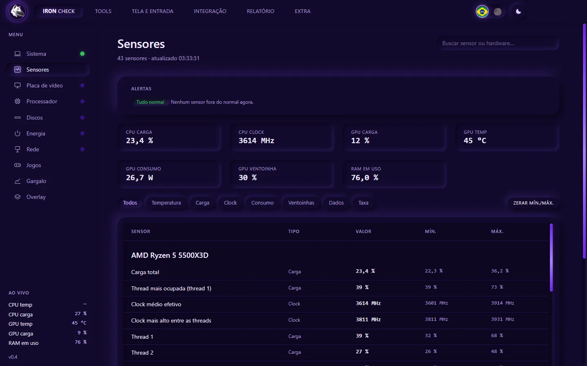
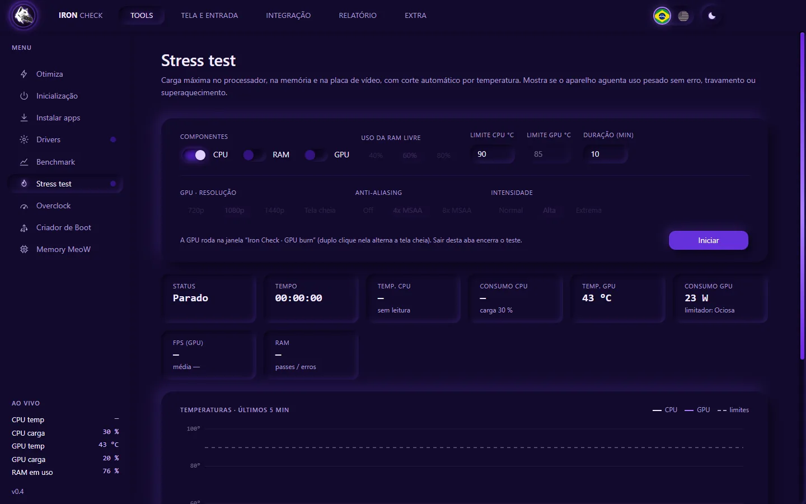
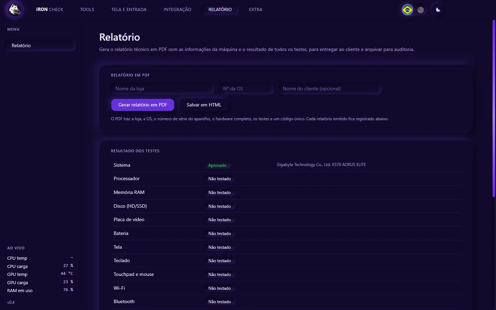

Cinco programas para um reparo
Um para ler o hardware, outro para o HD, outro para a memória, um site para o teclado… quase tudo em inglês, cada um de um jeito, e nada fica registrado.
O Iron Check testa o computador inteiro, instala o driver que falta (o da placa de rede funciona até sem internet) e emite um laudo em PDF com a ordem de serviço do seu cliente. Tudo em português (e em inglês, com um clique), num programa que roda do pendrive.
Windows 10 ou 11 (64 bits) · roda do pendrive, sem instalar · a chave de teste libera o programa completo por poucos dias
Clique no menu da tela: é o menu real do programa, em fotos das telas de verdade. As bandeiras trocam o idioma e, no Benchmark, cada teste mostra a sua animação.
O Iron Check enche a tela de cor, uma de cada vez. Mancha, vazamento de luz e pixel apagado aparecem na hora, antes de o aparelho voltar para o cliente.
Painel de exemplo, feito nesta página. Passe o mouse (ou o dedo) para acender os pixels e ache o que não acende. No preto, o defeito é o pixel que não apaga.
Se você toca uma assistência, provavelmente já passou por isto:
Um para ler o hardware, outro para o HD, outro para a memória, um site para o teclado… quase tudo em inglês, cada um de um jeito, e nada fica registrado.
Sem prova do que foi testado e de como o aparelho saiu da sua bancada, a conversa com o cliente vira a palavra de um contra a do outro.
Sem o driver da placa de rede não existe internet para baixar o driver da placa de rede. E lá vai você atrás do pendrive certo ou do celular.
HD com setores ruins, memória de vídeo falhando, bateria gasta, porta USB frouxa. O que não foi testado vira retorno.
O Iron Check foi feito para resolver exatamente isso.
| Hoje | Com o Iron Check |
|---|---|
| Vários programas e sites de teste, quase tudo em inglês. | Um programa só, em português e em inglês, que roda do pendrive. |
| Teste no olho e anotação no papel ou no WhatsApp. | Testes guiados, com o resultado de cada um registrado por aparelho. |
| O cliente reclama e você não tem como provar o que fez. | Laudo em PDF com a loja, a OS, o hardware e os testes, com código único e conferência de autenticidade do arquivo. |
| Formatou e a placa de rede ficou sem driver. | O driver da rede está no pendrive e instala sem internet (mais de 400 modelos de placa). |
| Descobre que o HD estava ruim depois de entregar. | SMART, varredura de superfície e desempenho antes de entregar, em HD, SSD SATA e NVMe. |
| Entrega sem saber se o aparelho aguenta uso pesado. | Stress test de processador, memória e placa de vídeo, com corte automático por temperatura. |
| Pendrive de boot em outro programa, formatação à parte. | Criador de Boot dentro do mesmo programa. |
Mais de 30 testes e ferramentas, na ordem em que você trabalha.
Saiba em segundos o que tem dentro do aparelho.

A checagem que você faz depois de trocar uma peça, sem esquecer nenhuma.

Driver, programas e sistema, sem caçar arquivo na internet.

Antes de entregar, force o aparelho e veja se ele segura.

É aqui que o cliente enxerga o valor do seu serviço.


Exemplo de laudo gerado pelo programa. Os identificadores do aparelho foram ocultados.
Um documento profissional, com o nome da sua loja, que mostra o que foi testado e em que estado o aparelho saiu da sua bancada.
Você trabalha com o computador dos outros. O Iron Check foi desenhado para não ser o motivo de uma dor de cabeça.
A varredura de superfície só lê. O teste de desempenho usa um arquivo temporário e apaga no final. Nenhum teste grava no disco bruto.
O Criador de Boot só enxerga pendrives USB e confere o alvo de novo antes de formatar. Nunca toca no disco do sistema.
O overclock é temporário e usa só os controles oficiais da NVIDIA. Os ajustes de jogo guardam o valor original. O driver de vídeo ganha ponto de restauração antes.
Os drivers vêm de pacotes oficiais dos fabricantes. O de vídeo é baixado só de servidores da NVIDIA, com a assinatura digital conferida.
Se a licença não puder ser confirmada, o programa apenas trava até regularizar. O bloqueio nunca apaga arquivos, nem do seu computador nem do computador do cliente.
Chame no WhatsApp. Você recebe uma chave de teste com poucos dias de uso, ou a chave de assinante depois do pagamento por Pix.
Baixe o kit completo (programa e drivers), extraia e copie a pasta para o pendrive. Só quer experimentar? Baixe apenas o programa.
Aceite o pedido de administrador do Windows. A primeira abertura prepara os arquivos, as seguintes são rápidas. A mesma chave vale em vários computadores.
Rode os testes automáticos, faça os manuais (tela, teclado, portas…) e gere o PDF da OS para entregar ao cliente.
A chave é conferida pela internet. Se o computador ainda não tem rede, a própria tela de ativação oferece a aba Drivers, e só ela.
Use o Iron Check em aparelhos de verdade, na sua bancada, e decida depois.
Windows 10 ou 11, 64 bits. Para liberar o programa você precisa de uma chave: peça a de teste no WhatsApp.
Arquivo .zip de 353 MB. Extraia e leve a pasta inteira para o pendrive.
Baixar o kit completoSe quiser, coloque a pasta drivers ao lado dele depois.
Baixar o programaJá tem a chave? Abra o arquivo, aceite o pedido de administrador do Windows e digite a chave. · Todas as versões
Os gratuitos são ótimos, cada um numa coisa, e você pode continuar com eles. O Iron Check junta o que você usa no balcão num lugar só, em português, e faz o que eles não fazem: testa portas USB, webcam, microfone e alto-falantes, instala o driver da rede sem internet e emite um laudo em PDF com a OS e a conferência de autenticidade do arquivo.
Chame no WhatsApp e peça uma chave de teste. Ela vale por poucos dias e libera o programa completo.
A assinatura é mensal. Você paga por Pix, manda o comprovante no WhatsApp e recebe a sua chave. Ela serve em vários computadores, pensada para quem atende muitos clientes. Para saber o valor, é só perguntar no WhatsApp.
O programa (Iron-Check-Portatil.exe, 92 MB) já abre sozinho. O kit completo traz também a pasta drivers, com a biblioteca de drivers de rede que o programa usa para instalar sem internet. Extraia o kit e deixe a pasta drivers ao lado do .exe.
Não. Você abre o arquivo de qualquer pasta ou do pendrive. Na primeira vez ele prepara os arquivos numa pasta ao lado dele, o que leva alguns segundos; depois abre rápido (cerca de 1 segundo no nosso teste). Os dados do programa (chave e configurações) ficam numa pasta ao lado do arquivo, não no computador do cliente.
Os testes não. A varredura do disco só lê, o teste de desempenho usa um arquivo temporário que é apagado no fim, e o Criador de Boot só mexe em pendrives USB (e avisa que apaga o pendrive). As poucas ferramentas que mudam o Windows, como os ajustes de jogo e a remoção de driver, pedem confirmação e guardam o valor original ou uma cópia.
É o aviso normal de programas novos que ainda não têm reputação no SmartScreen. Clique em Mais informações e depois em Executar assim mesmo. Alguns antivírus também analisam o arquivo na primeira abertura, o que pode levar alguns segundos a mais.
Para ler a saúde dos discos, a temperatura e instalar drivers, o Windows exige permissão de administrador.
O programa continua funcionando por até 24 horas com a última confirmação. Passado esse prazo sem conseguir conferir, ele fica bloqueado até a licença ser confirmada. Seus arquivos nunca são apagados.
Ela é para uso da sua assistência. O servidor registra os computadores e o local aproximado de cada uso, e o uso por muitas pessoas é detectado: a chave pode ser bloqueada.
Sim, nos dois. Alguns testes (bateria, touchpad, carregador) só fazem sentido em notebook. A ficha da placa de vídeo e os testes de estresse funcionam em qualquer PC.
Sim. Há um interruptor com as bandeiras do Brasil e dos EUA no topo da tela: com um clique, os menus, as mensagens e o laudo em PDF passam para o inglês, e a escolha fica salva. Útil para atender clientes que não leem português.
Os testes funcionam em qualquer placa. Os recursos específicos de placa, como overclock, leitura detalhada e instalação do driver, são para NVIDIA GeForce; AMD e Intel funcionam no restante.
Não. O programa precisa de Windows 10 ou 11, de 64 bits, no computador onde você abre o arquivo.
Atendimento direto com o desenvolvedor. Tire dúvidas, peça a chave e comece hoje.